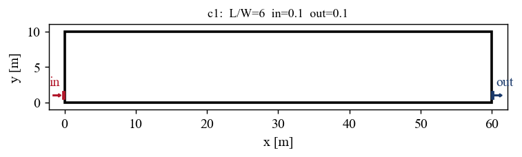
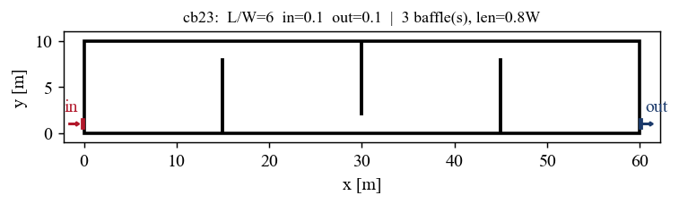
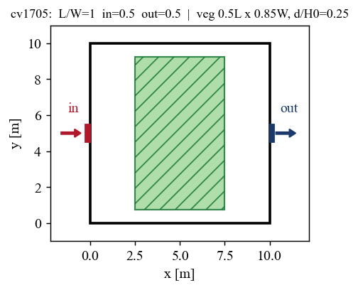
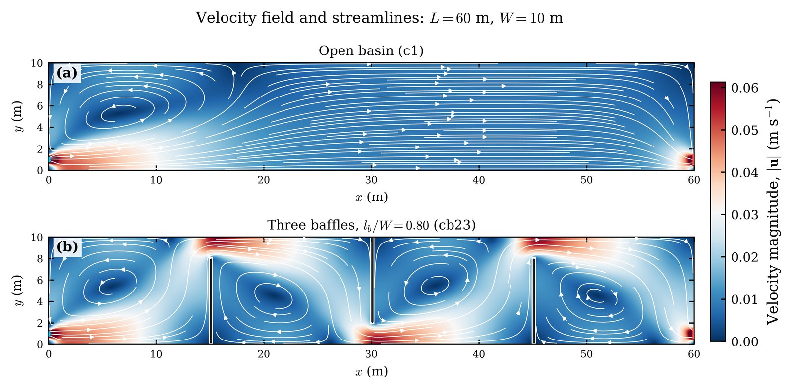
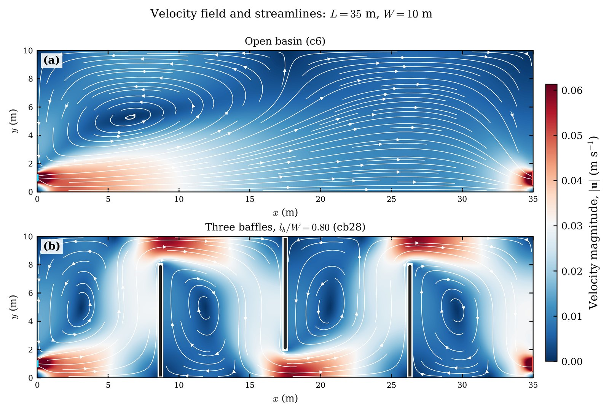

Research project GPU-accelerated CFD and machine learning
Rapid hydraulic prediction for constructed wetlands.
A physics-informed surrogate model for screening the hydraulic performance of free-water-surface constructed wetlands and waste stabilization ponds.
A tracer pulse enters at the red inlet, winds between the baffles and leaves at the blue outlet. Some tracer is held in the dead zones.
Why this project matters
Treatment performance depends strongly on how water moves from inlet to outlet. Short-circuiting, recirculation, and stagnant zones can reduce the effective treatment volume, while a well-designed flow path improves contact time and hydraulic efficiency. These behaviours are controlled by pond shape, inlet and outlet placement, baffles, and vegetation.
CFD resolves these processes by computing the wetland flow field and then tracking a conservative tracer from inlet to outlet. This project uses a GPU solver to generate a training dataset of 3,000 model cases, then uses a surrogate model to map design variables to hydraulic performance.
Representative model geometries
The model describes open basins, layouts with transverse baffles, and wetlands with a centred vegetation patch. Inlets are shown in red, outlets in blue, solid baffles in black, and vegetation in green.



Illustrative velocity fields and streamlines
The GPU solver resolves the main flow path and recirculation zones inside each layout. These examples compare open basins with alternating transverse baffles.


From wetland design to prediction
- 1
Describe the layout
Dimensionless inputs define pond shape, inlet and outlet locations, baffles, and a centred floating vegetation patch.
- 2
Generate CFD data
A depth-averaged shallow-water and k-ε turbulence solver computes the flow, followed by conservative tracer transport.
- 3
Train the surrogate
Gradient-boosted trees predict scalar indices, while a physics-constrained neural model predicts the full residence-time distribution.
- 4
Screen new designs
The trained model evaluates new layouts for sensitivity studies, parameter sweeps, and future design optimization.
The GPU-accelerated solver
The data generator is a vectorized PyTorch solver designed for a single CUDA-capable GPU. CUDA graph capture reduces launch overhead, while batching allows several geometries to use the GPU efficiently.
Hydrodynamics
Depth-averaged shallow-water equations with a depth-averaged k-ε turbulence closure.
Tracer and RTD
A conservative tracer pulse is transported on the frozen flow field to obtain the outlet residence-time distribution.
Automatic metrics
Each case returns standard measures including effective volume, short-circuiting, baffling factor, dispersion, and residence-time statistics.
Verification
The numerical framework is tested against analytical and closed-form benchmarks for flow, turbulence, conservation, and ideal-reactor behaviour.
What the surrogate predicts
Hydraulic-efficiency indices
The scalar model predicts established indices used to characterize wetland and pond hydraulics, including residence-time statistics, effective volume, short-circuiting, baffling, and dispersion measures.
Full breakthrough response
A physics-constrained inverse-Gaussian reactor mixture predicts the full residence-time distribution. The formulation keeps each prediction non-negative, mass-conserving, monotone in cumulative form, and causal.
Applications and current scope
Rapid screening
Compare alternative aspect ratios, port locations, baffle arrangements, and vegetation-patch dimensions before detailed design.
Sensitivity analysis
Identify which design variables most strongly control short-circuiting, effective volume, dispersion, and plug-flow behaviour.
Optimization
Use the surrogate as a future inverse-design engine, then confirm the best candidate layouts with the high-fidelity solver.
Reliability boundary
The present model applies within its sampled similarity family. Tail-sensitive indices are screening-grade, and designs outside the training range require new CFD data.
More projects
- 3D Lagrangian model
GPU microplastic transport
Following every microplastic through the water, with biofilm growth and number-conserving fragmentation.
Open the project - You are here
Constructed wetland surrogate
Rapid prediction of hydraulic efficiency and residence time in wetlands and ponds.
- Interactive simulator
Dense jet simulator
An inclined brine jet rises, falls back and spreads along the bed.
Open the simulator - Bayesian instrument
Ariake survey instrument
A few samples give the whole suspended field of the bay, with its uncertainty.
Open the instrument - Teaching demonstration
Microplastic journey
A schematic river-to-lake demonstration of how microplastics travel and settle.
Open the demonstration - Publications
Journal articles and theses
Microplastic transport, environmental hydraulics, dense jets and turbulence.
See the list
Interested in wetland hydraulics or surrogate modelling?
I welcome collaboration on model extension, validation data, and design applications.